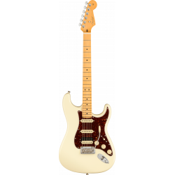

La Fender Stratocaster, popularmente conocida como Strat o Strato, es un
modelo de guitarra eléctrica diseñado entre 1952 y 1954 por
Leo Fender, Bill Carson, George Fullerton y Freddie Tavares. Siendo fabricada
y comercializada por Fender Musical Instruments Corporation desde 1954 a la
actualidad. Es una guitarra de doble cutaway, con el «cuerno» superior más grande
para el balance de la misma. Junto a la Gibson Les Paul y Fender Telecaster, es
uno de los modelos de guitarra más imitados del mundo. Debido a que
«Stratocaster» y «Strat» son marca registrada de Fender, las guitarras
de otros fabricantes que han copiado el modelo Stratocaster son habitualmente
llamadas S-Type o ST-type.
Stratocaster

Desarrollado:1954-presente
fabricantes:Fender
Pastillas:Comúnmente tres single coil (SSS). Otras configuraciones de pastillas también son utilizadas.
Gibson Les Paul
Les Paul
La Gibson Les Paul es un modelo de guitarra eléctrica y bajo de la marca Gibson Guitar
Corporation. Fabricada desde 1952, la Gibson Les Paul es extensamente considerada, junto
con la Fender Stratocaster, la guitarra eléctrica de cuerpo macizo más popular del
mundo.
Concebida inicialmente por Ted McCarty
y el guitarrista Les Paul como una guitarra de altas prestaciones, fue
producida a lo largo de la década de 1950 con progresivas variaciones hasta dejar de
fabricarse en 1960 con ese nombre, en favor de la Gibson SG —básicamente una Les Paul
con un «cutaway» o recorte adicional en el cuerpo de la guitarra—, para volver a su
fabricación desde 1968 hasta la actualidad.
Se trata de una guitarra de cuerpo macizo, sin caja de resonancia. generalmente de
caoba y con una tapa convexa de arce, cuyo acabado puede ser
tanto en colores opacos como en otros traslúcidos que permiten ver las
vetas de la madera. El mástil, encolado, lleva inserta un alma regulable y
está rematado por un diapasón de 22 trastes, que suele ser de palo rosa.
Incorpora dos fonocaptores o «pastillas» de bobinado doble o «humbuckers» y
un puente Tune-o-matic sin palanca de vibrato, todos patentes de la propia
fabricante del instrumento. Estas características generales se ven alteradas
en algunos modelos, tanto por parte de Gibson como por algunos de sus usuarios.
Les Paul
desarrollado:1952-1960, 1961-1963 (en modelo SG), 1968-presente
fabricantes: Gibson Cort Epiphone Harley Benton
Pastillas: 2 o 3 Humbuckers; 2 P-90.
Gibson Flying V
Flying v
Están hechas con madera Korina, una marca comercial de limba, una madera similar pero más ligera que la caoba. Los primeros prototipos se fabricaron en 1957. Estas Flying V, junto con las Explorer e, inicialmente, la Moderne, formaban una línea modernista diseñada por el entonces presidente Ted McCarty. Estos diseños buscaban darle un aspecto más futurista a la imagen de Gibson, pero no tuvieron éxito en las ventas. La línea inicial lanzada en 1958 se dejó de fabricar en 1959.
A mediado de los años '60, guitarristas como Albert King, Lonnie Mack, Dave Davies, Keith Richards y Jimi Hendrix, en la búsqueda de un aspecto distintivo y un sonido potente, comienzan a usar guitarras Flying V. El renovado interés crea una demanda para que Gibson vuelva a fabricar el modelo.
Gibson vuelve a fabricar la guitarra en 1966, actualizando su diseño con un golpeador mayor y más estilo, y sustituyendo el puente original, que inserta las cuerdas por la parte posterior, por el puente 'stopbar' más común en los modelos Gibson. Algunos modelos se vendieron con una pequeña palanca de vibrato. Este modelo de 1966 es ahora el estándar para Flying V o, como Gibson lo llama, "V Factor X".
Como parte de una serie de ediciones limitadas que realizó la compañía en el año 2007 la Flying V tuvo una versión especial que giraba su diseño, el nombre de la guitarra fue Reverse Flying V.
Gibson Explorer, o X-plorer (desde 2002) es una guitarra eléctrica de cuerpo macizo fabricada por Gibson. Fue presentada en 1958, como desarrollo de un prototipo previo denominado «Futura». Se pretendía con ella introducir en el mercado un modelo de líneas radicales e inspiración futurista, como ocurría con sus hermanas, la Flying V y la Gibson Moderne. Inicialmente fracasó y dejó de fabricarse en 1959. Sin embargo, en 1975, Gibson comienza la reedición de la Explorer debido al éxito de diseños similares de otras compañías.
explorer
desarrollado: 1958, descatalogada, reeditada en 1975